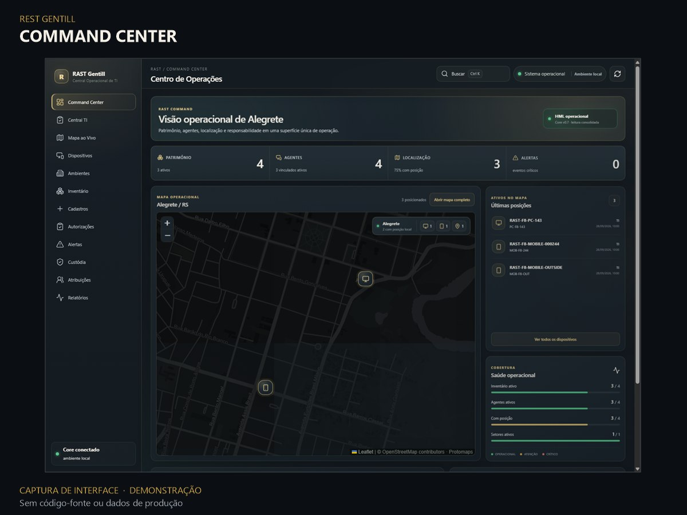
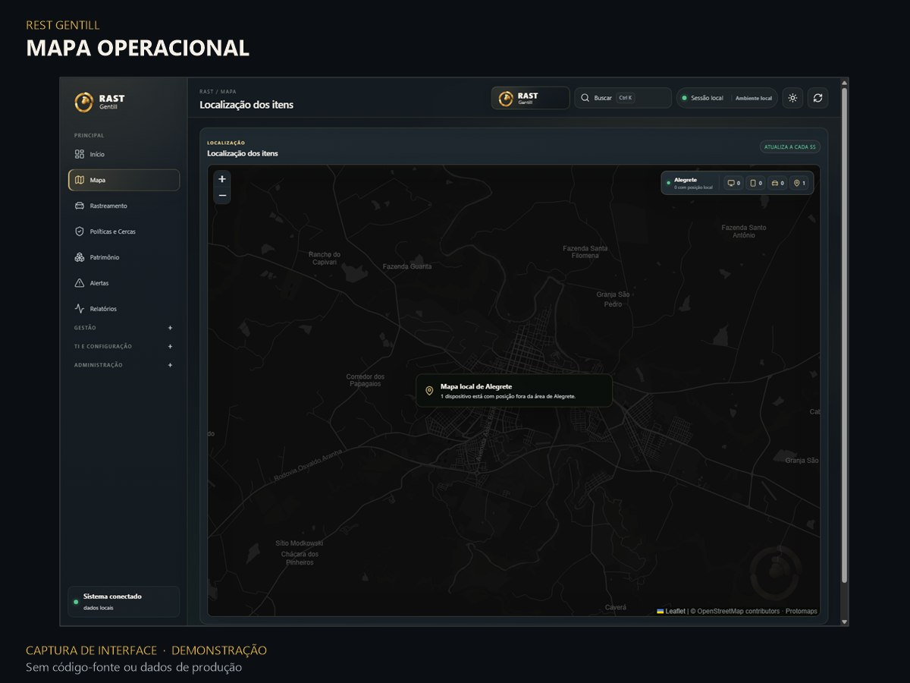
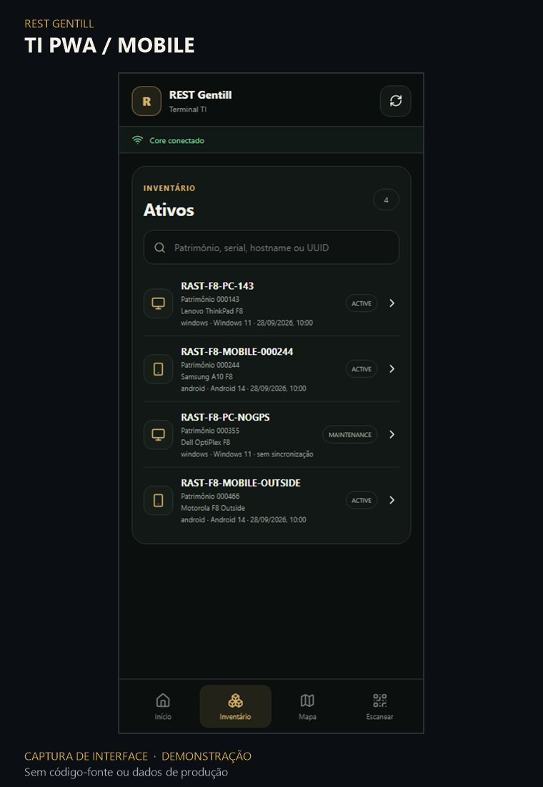
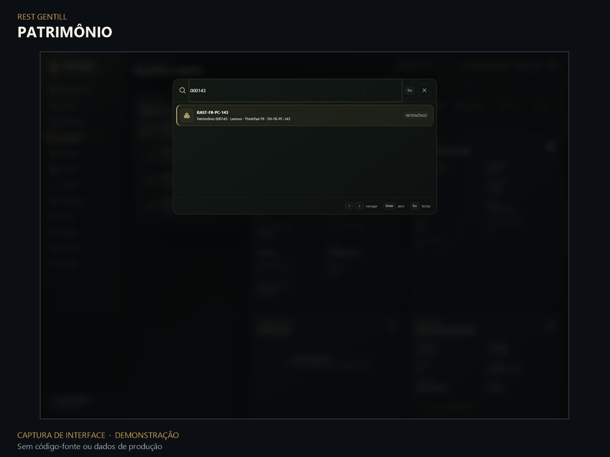

PRODUCT GALLERY · UI DEMONSTRATION
Produto em perspectiva.
Interfaces reais capturadas durante testes locais e reprocessadas para apresentação pública. As imagens com fixtures exibem exemplos demonstrativos; o mapa é uma captura de QA local, sem coordenadas individuais divulgadas. Nenhuma imagem representa implantação em produção.






ADDITIONAL DETAIL
Busca patrimonial
Detalhe do componente de busca em fixture demonstrativa. Não representa a tela completa de Patrimônio.

Documentação de portfólio · Código-fonte e dados operacionais permanecem privados. Notas sobre as capturas.